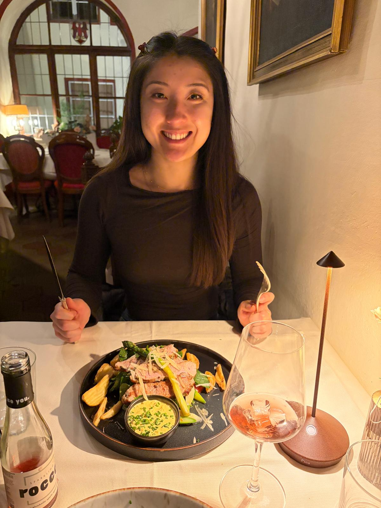
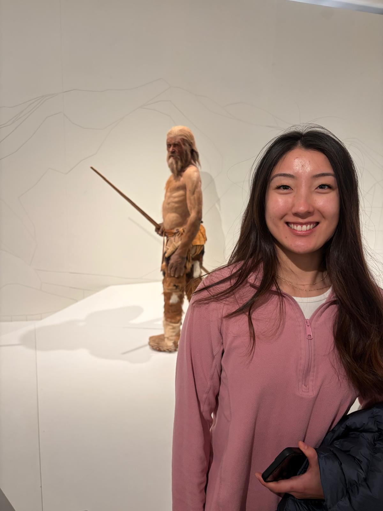
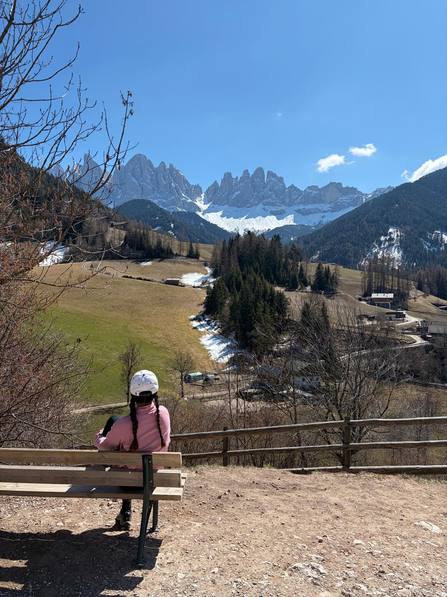
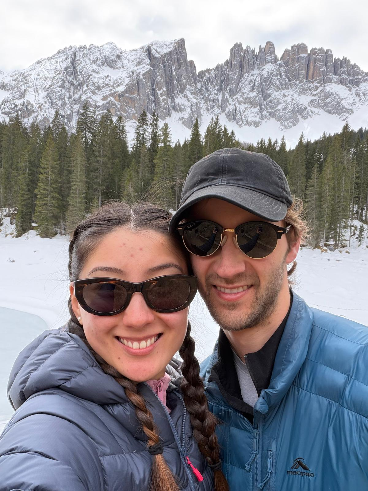
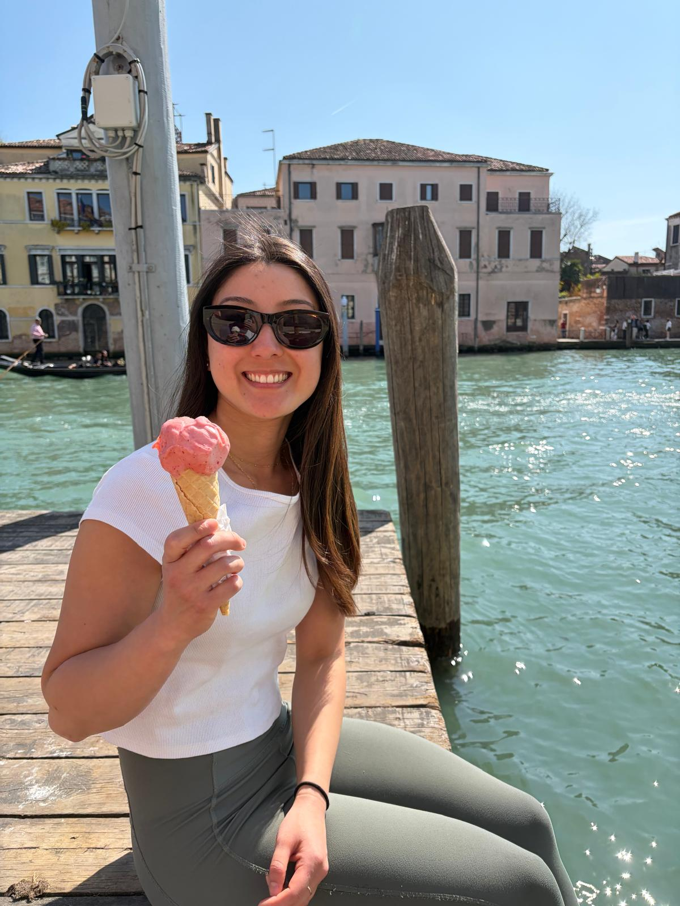

← Travel
Bolzano 2026
To meet up with James and Pat and Nat we took a trip to the Dolomites, part 1 of any epic European adventure!

1st April 2026
We arrived at Gatwick for our flight to Bolzano, unaware of just what type of plane we were hopping on. It was very small, with propellors even! It was a cool experience and seeing the alps from the windows was very surreal, the clouds seemed to settle like a blanket between the peaks. We arrived and had a German feeling dinner despite being in Italy (although quite close to the Austrian border).

2nd April 2026
We woke up to a beautiful morning and decided to go to the museum famous for Otzi, the oldest preserved mummy in the world. It was locked away in a temperature controlled vault but was still looked somewhat like a person (that kind of sounds gruesome to say!). Next we took a cable car up to a hike around the mountains. Summer still was waiting in the wings so temperatures were cold and the greenery hadn't quite come to full fruition yet. But that meant we were surrounded by snow capped mountains. We made it to these fascinating pillars that looked like cones that had been formed by winds whistling through the peaks.

3rd April 2026
Next we headed off further north towards the true heart of the Dolomites. After a couple of hours in the car and some windy roads mixed with motorways we reached a quaint town. We decided on a hike up and around the mountains, circling our small town. It was a beautiful spot and we mat some cute furry friends along with way. One overly firendly cat approached and later on a larger black dog!

4th April 2026
Sophie and I woke up early to catch the sunrise over the distinct peaks. The pink clouds framed the peaks nicely and we even had a shot of the old church in the foreground. We tried our luck at a hike but found it way too icy to continue, I nearly slipped trying to get a better view! We decided to drive around and explore some of the other towns that the Dolomites has to offer. We stopped by a frozen lake which we treacherously navigated around, throwing snowballs at each other. Then stopped off at a nice town to have some hot drinks to warm us up. In the evening I wanted to capture the sun setting from a higher vantage point so I went up past the new church and got one of my favourite time lapses of the sun setting over some Dolomite peaks.

5th April 2026
I did a quick early morning hike to get some exercise before our next adventure to Venice! We snuck in through the tourist gates and explored the narrow alleys. It wasn;t our first visit to Venice so for a large part of it we opted to sit on an empty jetty watching the boats go past and enjoying our delicious gelato. Venice has a lot of these quiet jettys onto the canal which people often miss! We quickly moved on from Venice as it was only a stopover and hopped on a train to Rome!